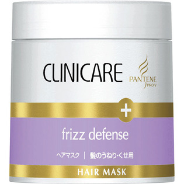

返回列表
产品名称：パンテーン クリニケア うねり・くせ用 ヘアマスク

Ｐ＆Ｇジャパン パンテーン クリニケア うねり・くせ用 ヘアマスク １５０ｇ
メーカー Ｐ＆Ｇジャパン
JANコード 4902430253284
商品の特徴
髪内部に深く浸透し、ナノレベルの水分コントロールによって、髪全体にやわらかさを与えてくれる集中ヘアマスクです。また、余分な水分をブロックし、湿気や乾燥によるイヤなくせの戻りをガードします。
成分・分量
用法及び用量
コンディショナー後、軽く水気を切ります。両手の指を交差させるようにすり合わせて指の間まで広げ、毛先を中心に十分にもみ込み、髪全体になじませます。
3～5分放置後、しっかりとすすぎます。蒸しタオルを巻いて、3～5分しっかりと温めるのもおすすめです。